Nenhum assunto encontrado. Tente outra palavra ou veja os problemas comuns.
Começar
Antes de começar
- Um celular Android 6.0 ou mais novo com o aplicativo instalado, ou qualquer navegador para o site.
- Um e-mail e senha criados pelo administrador, ou uma conta Google (Gmail).
- Internet para quase tudo. A exceção é abrir e encerrar viagens, que funciona sem sinal.
Entrar e sair
Há duas formas de entrar, e as duas levam ao mesmo lugar:
- E-mail e senha: digite o e-mail e a senha que o administrador criou para você e toque em Entrar. A conta já vem com o seu perfil.
- Google: toque em Entrar com Google e escolha a sua conta.
Nas próximas vezes o app já abre com você conectado. Enquanto confere a sessão, aparece "Verificando sessão…".
Primeira vez pelo Google? A conta nova entra como Motorista. Se o seu trabalho é outro, peça ao administrador para mudar o seu perfil. Se o administrador já criou uma conta com o seu e-mail, o Google entra nela, com o perfil que ela já tem.
Para sair: abra o menu (☰) e toque em Sair.
Sem instalar nada: o painel web em gestaofrota.runasp.net mostra relatórios, movimentações, viagens e os cadastros.
O que cada perfil vê
O menu mostra só o que o seu perfil pode usar. Seu nome e seu perfil aparecem no topo do menu. Botões que o seu perfil não pode usar nem aparecem.
| Tela | Administrador | Gestor de Frota | Financeiro | Motorista |
|---|---|---|---|---|
| Início | ✓ | ✓ | ✓ | ✓ |
| Viagens | ✓ | ✓ | — | ✓ só as suas |
| Frota | ✓ | ✓ sem desativar | — | ✓ só consulta |
| Rotas | ✓ | ✓ sem desativar | — | — |
| Movimentações | ✓ | ✓ só consulta | ✓ | — |
| Dívidas e Financiamentos | ✓ | ✓ só consulta | ✓ | — |
| Relatórios | ✓ | ✓ | ✓ | — |
| Categorias e Formas de Pagamento | ✓ | ✓ só consulta | ✓ sem desativar | — |
| Usuários | ✓ | — | — | — |
O Motorista abre o aplicativo direto em Viagens.
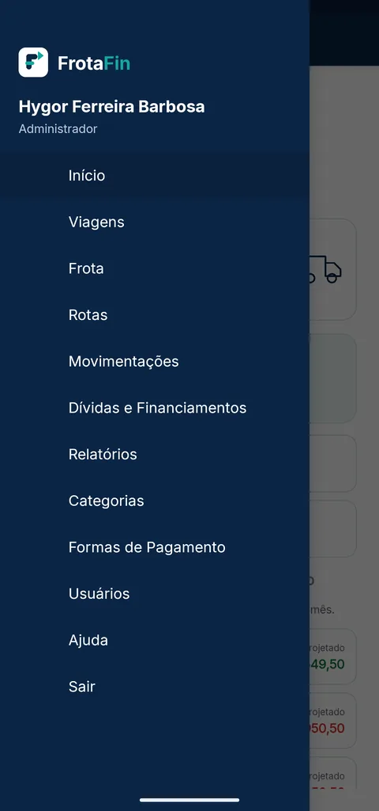
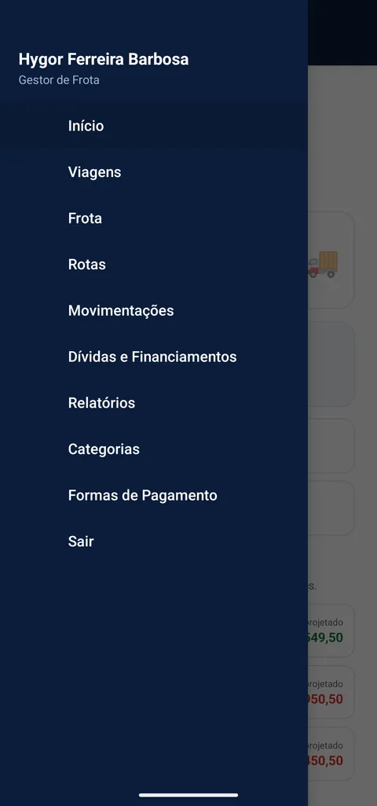
Início
É o resumo do caixa e da frota:
- Saldo atual (pago/recebido): o que de fato entrou menos o que de fato saiu. Contas ainda não pagas não entram aqui.
- Entradas pagas, Saídas pagas, A receber e A pagar.
- Projeção de caixa por mês: quanto vai sobrar em cada mês se o que está pendente for pago no vencimento.
- Veículos em viagem: quantos caminhões estão rodando agora.
Para atualizar qualquer lista, puxe a tela para baixo.
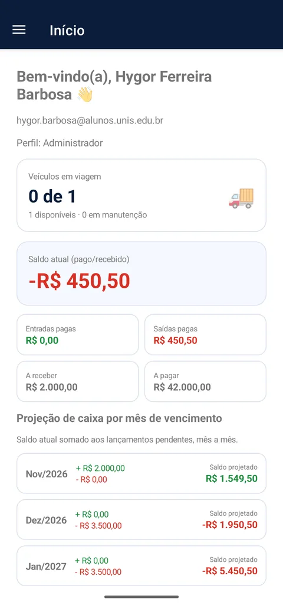
Movimentações (entradas e saídas)
Lançar, pagar e estornar: Administrador e Financeiro. O Gestor de Frota consulta.
Lançar uma entrada ou saída
- Menu › Movimentações › + Nova movimentação.
- Escolha o Tipo: Receita (entrou dinheiro) ou Despesa (saiu dinheiro).
- Preencha o Valor (R$) — com vírgula, como 350,50 —, a Descrição, a Categoria e a Forma de pagamento.
- Informe a Data de vencimento. Se já foi pago, ligue Já pago e informe a data.
- Se for combustível, preencha os Litros abastecidos.
- Se o gasto ou a receita for de uma viagem, use Vincular à viagem. É isso que permite calcular o custo por km.
- Toque em Salvar movimentação.
Anexar o comprovante
Em Comprovante (opcional): Câmera tira a foto na hora; Galeria escolhe uma foto do celular. Até 5 MB. Para ver depois, toque em Comprovante na lista.
Na primeira vez o celular pede permissão para a câmera. Se você negar, a Galeria continua funcionando; se bloquear de vez, o app oferece Abrir configurações para liberar.
Marcar como pago e estornar
Marcar como pago faz o lançamento entrar no saldo. Estornar cancela um lançamento feito por engano sem apagá-lo: ele continua no histórico, mas sai do saldo, da projeção e dos relatórios.
Use os filtros no alto da lista para achar um lançamento.
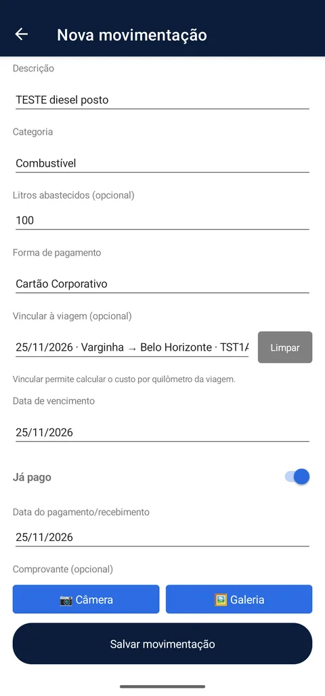
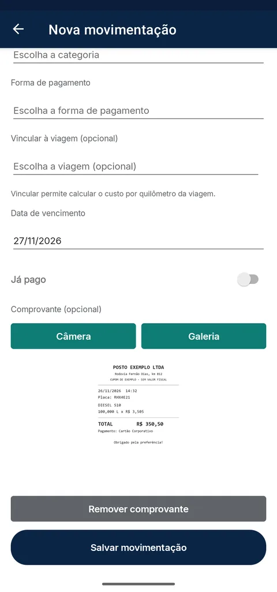
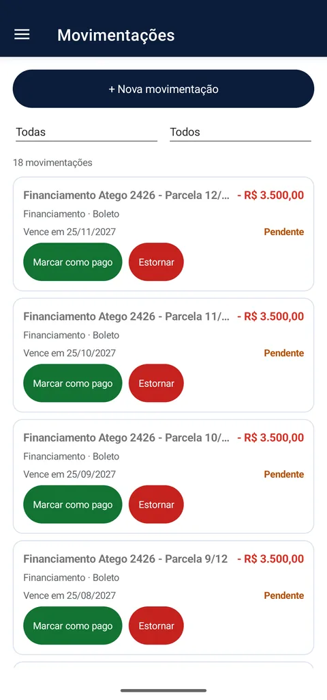
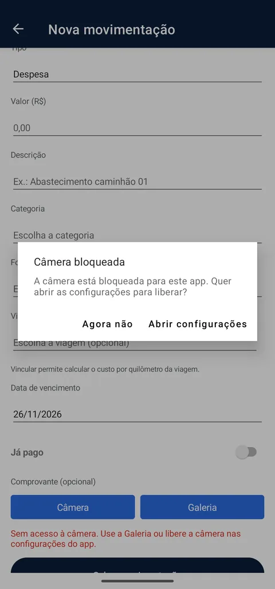
Dívidas e Financiamentos
Cadastrar e pagar parcelas: Administrador e Financeiro. O Gestor de Frota consulta.
Para financiamentos e compras parceladas: o aplicativo cria todas as parcelas de uma vez.
- Menu › Dívidas e Financiamentos › + Novo financiamento.
- Preencha a Descrição, o Valor da parcela, a Quantidade de parcelas e o Vencimento da 1ª parcela. O total aparece antes de salvar.
- Escolha a Categoria das parcelas e a Forma de pagamento.
- Toque em Salvar e gerar parcelas.
Uma parcela pendente por mês aparece em Movimentações e na projeção do Início. Para pagar, abra a dívida e toque em Marcar parcela como paga.
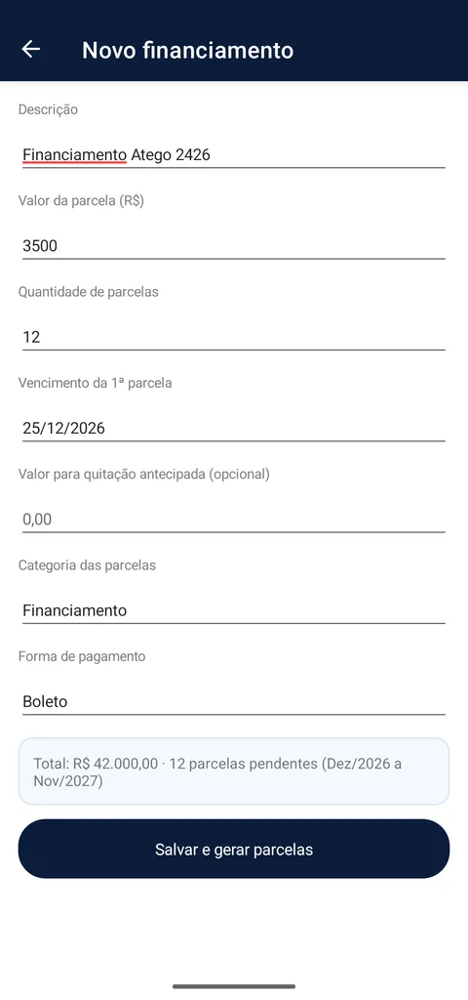
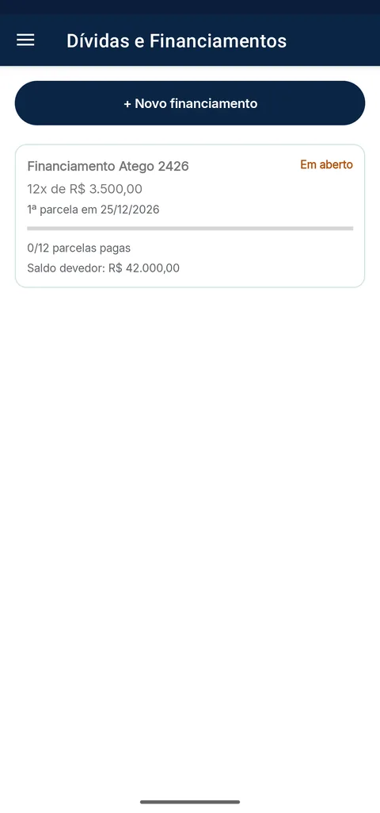
Categorias e Formas de Pagamento
Já vêm prontas as categorias Frete, Combustível, Pedágio, Manutenção, Salários e Financiamento e as formas Pix, Boleto, Transferência TED e Cartão Corporativo.
- Nova categoria: digite o nome, escolha o tipo e toque em Adicionar categoria. Arraste para o lado para Editar.
- Desativar (só o Administrador) tira a categoria das opções novas sem apagar os lançamentos antigos.
- Nova forma de pagamento: digite o nome e toque em Adicionar forma de pagamento.
Frota
Cadastrar, editar e manutenção: Administrador e Gestor. Desativar: só o Administrador. O Motorista consulta.
Cadastrar um veículo
- Menu › Frota › + Novo veículo.
- Placa no formato antigo (ABC-1234) ou Mercosul (ABC1D23). Não aceita placa repetida.
- Preencha Marca, Modelo, Ano, Capacidade (t) e Hodômetro atual (km) e toque em Salvar veículo.
Cada veículo mostra a situação: Disponível, Em viagem ou Em manutenção. O hodômetro se atualiza sozinho a cada viagem encerrada.
Registrar uma manutenção
Toque em Registrar manutenção no veículo, preencha data, serviço, valor e forma de pagamento e salve. O app lança a despesa no caixa e coloca o veículo Em manutenção. Ao terminar, toque em Concluir manutenção.
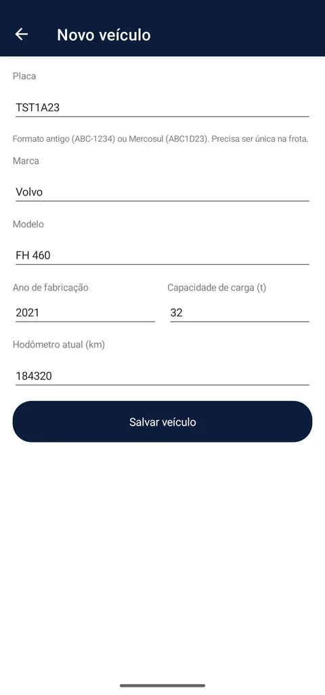
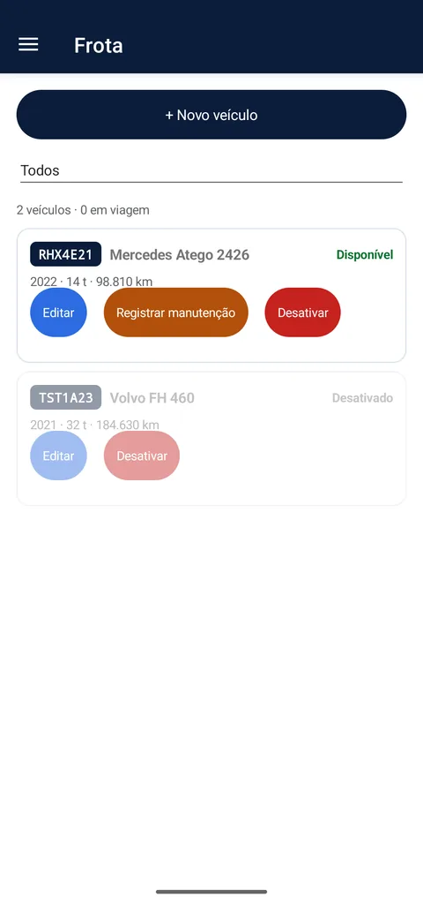
Rotas
Menu › Rotas: preencha o Nome da rota, a Origem, o Destino e a Distância estimada (km) e toque em Adicionar rota. Arraste a rota para o lado para Editar ou, se for Administrador, Desativar.
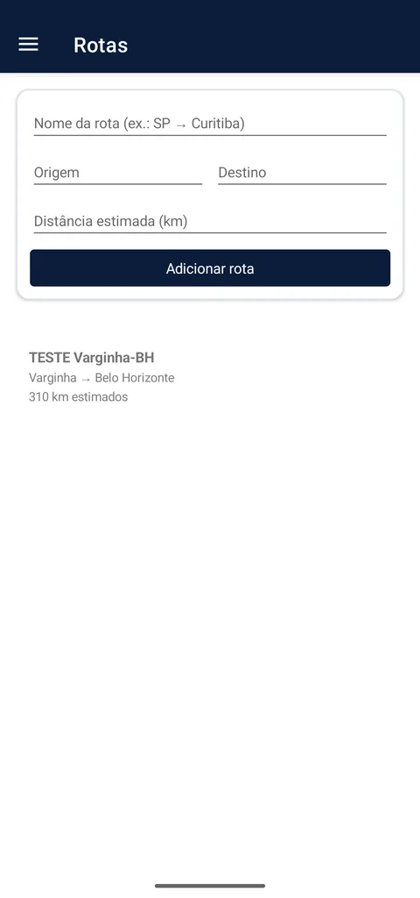
Viagens
Abrir uma viagem
- Menu › Viagens › + Abrir viagem.
- Escolha o Veículo (só aparecem os disponíveis) e a Rota. O hodômetro inicial já vem preenchido com o do veículo; confira no painel.
- Administrador e Gestor escolhem o Motorista. Quem é Motorista abre sempre para si.
- Toque em Abrir viagem. O veículo passa a Em viagem.
Encerrar
Toque em Encerrar viagem, informe o Hodômetro final (maior que o inicial) e confirme. O app calcula os km rodados sozinho.
Cancelar
Administrador e Gestor podem Cancelar uma viagem aberta por engano. O veículo volta a ficar disponível e nada de quilometragem é contado.
Sem internet
- Abrir e encerrar funciona sem sinal: aparece "Encerramento salvo no aparelho".
- Na lista fica Encerrada · aguardando envio.
- Quando o sinal voltar, abra Viagens e puxe a tela para baixo. Nada é registrado em dobro.
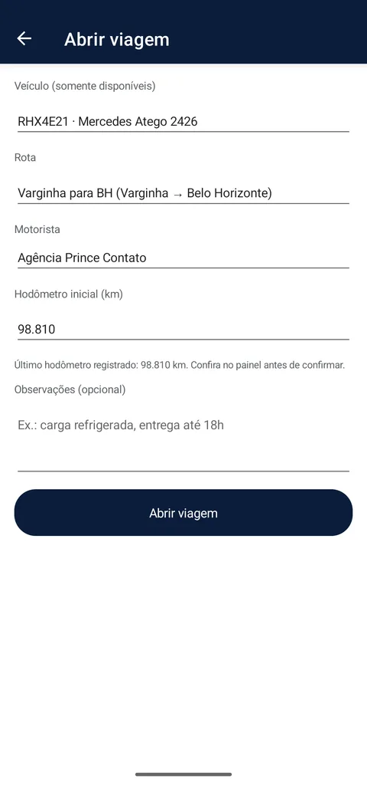
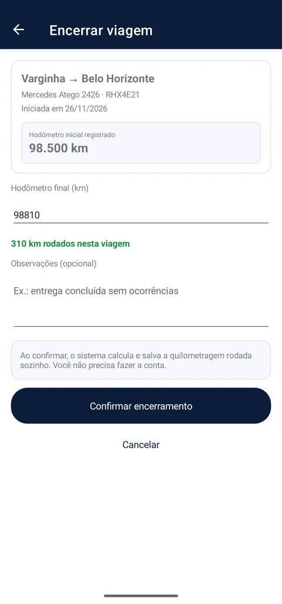
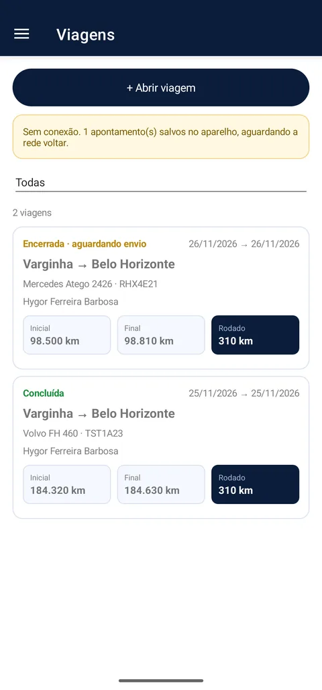
Relatórios
Escolher o período
No alto: 3 m, 6 m, 1 ano, 2 anos ou Tudo (inclui parcelas futuras). Personalizar escolhe um mês, um ano ou um intervalo livre.
O que a tela mostra
- Resultado do período, entradas, saídas, a receber, a pagar, pendentes em atraso e a maior despesa.
- Entradas e saídas por mês: toque num mês para ver os valores.
- Despesas por categoria (gráfico de rosca).
- Frota no período, rotas mais lucrativas e veículos mais eficientes (custo por km e consumo).
Os números da frota dependem de as despesas e receitas estarem vinculadas às viagens.
Exportar
PDF gera um relatório pronto para imprimir; CSV (planilha) abre no Excel ou no Google Planilhas. O celular oferece salvar no Drive, enviar pelo WhatsApp ou por e-mail. No site, os mesmos botões baixam o arquivo.
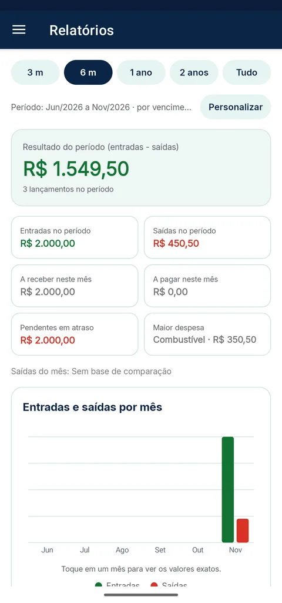
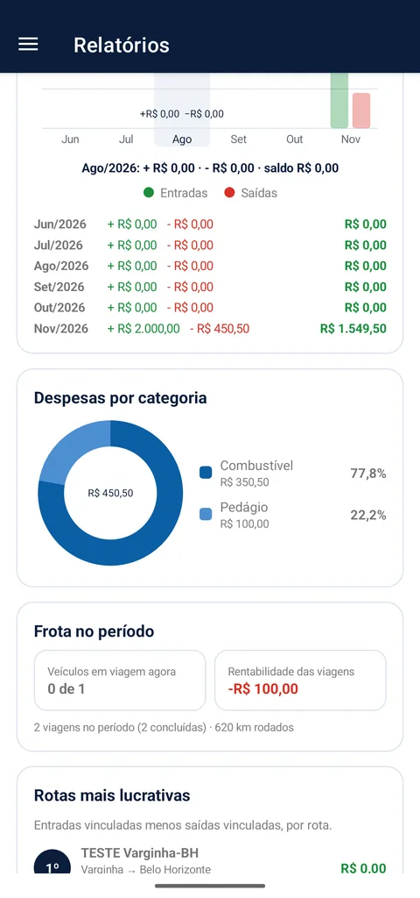
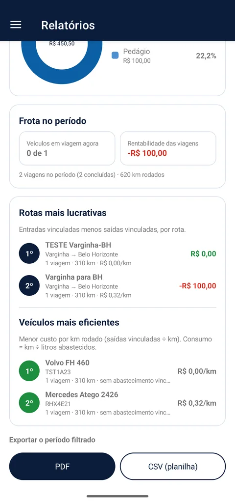
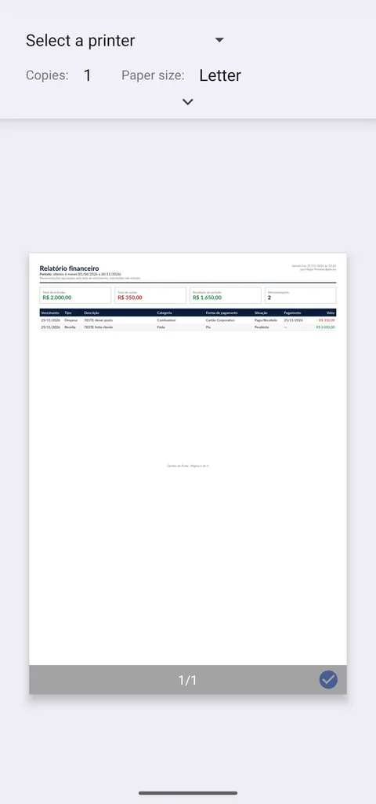
Usuários (só o Administrador)
Criar uma conta com senha
- Menu › Usuários › + Novo usuário.
- Preencha Nome, E-mail, Perfil e Senha inicial (pelo menos 8 caracteres, com letras e números) e toque em Criar usuário.
- Passe o e-mail e a senha à pessoa por um canal seguro. Ela já entra com o perfil certo.
Definir senha, em cada pessoa da lista, cria ou troca a senha, inclusive de quem só entrava pelo Google. Cada pessoa mostra por onde entra: e-mail e senha, Google ou os dois.
Contas desativadas saem da lista; para vê-las e reativar, ligue Mostrar inativos. Usuário não é excluído, porque viagens e lançamentos ficam ligados a ele.
Mudar o perfil
- Em Perfil do usuário, escolha Administrador, Gestor de Frota, Financeiro ou Motorista / Operador.
- Toque em Salvar perfil. Aparece a confirmação.
A pessoa vê o menu novo depois de sair e entrar de novo: o perfil vai dentro da sessão, renovada a cada login.
Por segurança, depois de 5 senhas erradas seguidas o login por senha daquela conta fica bloqueado por 15 minutos. Definir uma senha nova desfaz o bloqueio.
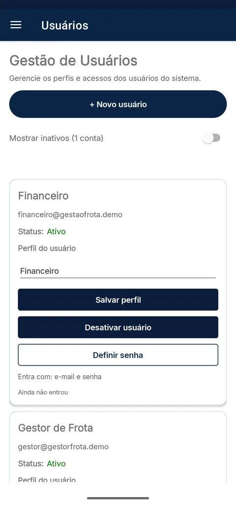
Problemas comuns
Entrei, mas o menu só tem Início, Viagens e Frota
Sua conta ainda é de Motorista. Peça ao administrador para mudar o seu perfil e entre de novo.
O login abre o Google, mas não volta para o aplicativo
Feche o aplicativo e tente de novo. Se continuar, avise o responsável pelo sistema.
"E-mail ou senha incorretos"
Confira o e-mail e a senha (maiúsculas contam na senha). Se esqueceu, peça ao administrador para definir uma senha nova em Usuários.
"Muitas tentativas erradas"
Depois de 5 senhas erradas seguidas, o login por senha fica bloqueado por 15 minutos. Espere ou peça ao administrador para definir uma senha nova, que desfaz o bloqueio.
Aparece "Verificando sessão…" por alguns segundos
É normal quando o servidor estava parado: ele acorda em até 20 segundos. Se a internet cair, o app abre com a sessão salva.
"Sem conexão" ao salvar um lançamento
Lançamentos precisam de internet. Espere o sinal voltar e salve de novo. Só as viagens funcionam sem sinal.
A viagem continua "aguardando envio"
Com internet, abra Viagens e puxe a tela para baixo.
Não aceita o hodômetro final
Ele precisa ser maior que o inicial. Confira o painel do caminhão.
O veículo não aparece para abrir viagem
Ele está em viagem, em manutenção ou desativado. Veja a situação em Frota.
Não aceita a placa
Use ABC-1234 (antiga) ou ABC1D23 (Mercosul) e confira se ela já não está cadastrada.
A câmera não abre
Libere a câmera para o app nas configurações do celular (o próprio app oferece o atalho) ou use a Galeria.
A foto do comprovante não sobe
A foto tem mais de 5 MB. Tire outra ou escolha uma imagem menor.
Não vejo os botões de pagar, estornar ou desativar
Eles só aparecem para o perfil que pode usá-los. Veja a tabela em O que cada perfil vê.
Palavras usadas no aplicativo
- Receita
- Dinheiro que entra (ex.: frete recebido).
- Despesa
- Dinheiro que sai (ex.: combustível, pedágio).
- Pendente
- Ainda não foi pago ou recebido.
- Estornar
- Cancelar um lançamento sem apagar o histórico.
- Hodômetro
- O contador de quilômetros do painel do caminhão.
- Rentabilidade
- Receitas da viagem menos despesas da viagem.
- Custo por km
- Despesas da viagem divididas pelos quilômetros rodados.
- Consumo (km/l)
- Quilômetros rodados divididos pelos litros abastecidos.